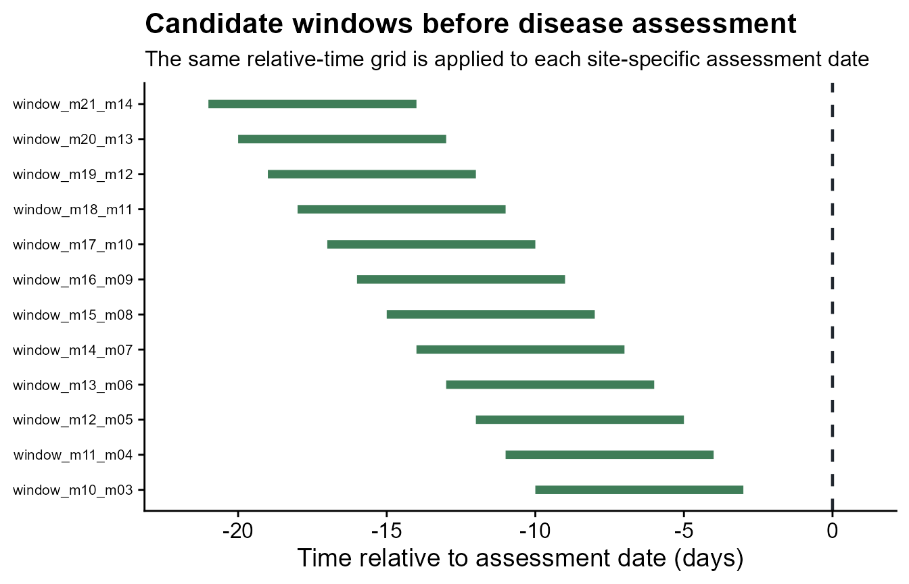
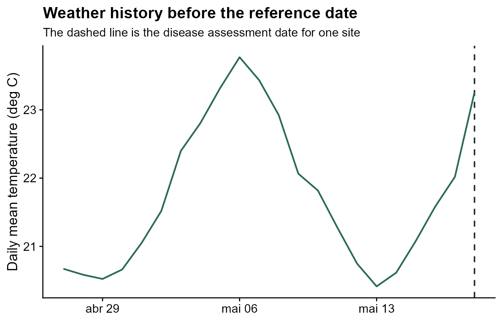
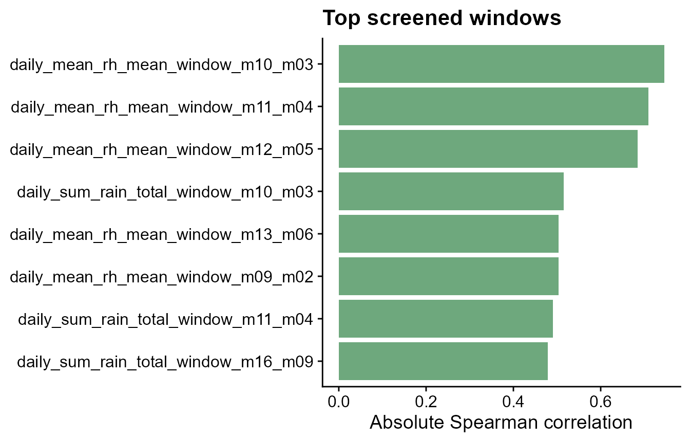

windcut starts from a simple idea: each field, site,
plot, or location has a weather time series and one biologically
meaningful reference date. The reference date can be an assessment date,
planting date, flowering date, inoculation date, or any other date that
makes sense for the disease system.
What you will learn. This tutorial shows how to
organize your own data for windcut, how to check the
expected structure, and how to turn weather records into window-pane
predictors.
The two tables windcut expects
Most workflows use two tables. The weather table has repeated observations over time. The assessment table has one row per modeling unit, usually one row per site or field.
| Table | Required information | Typical columns |
|---|---|---|
| Weather table | Site identifier, observation time, and one or more numeric weather variables |
site_id, time,
daily_mean_temp, daily_mean_rh,
daily_sum_rain
|
| Assessment table | Site identifier, at least one reference date, and optionally a disease response |
site_id, assessment_time,
planting_time, disease_intensity
|
The exact weather-variable names are your choice.
windcut can summarize columns named
daily_mean_temp, temp2m, relhum,
prectot, sradiation, or any other clear names.
The important part is that you tell the function which columns should be
summarized.
Use the demo data as a template
The bundled dataset is useful as a template because it has the same structure expected from a real project: one daily weather table and one disease assessment table.
data(window_pane_demo_data)
weather <- window_pane_demo_data$weather
assessments <- window_pane_demo_data$assessments
weather |>
slice_head(n = 6) |>
knitr::kable()| site_id | date | time | daily_mean_temp | daily_mean_rh | daily_sum_rain | daily_sum_leaf_wetness |
|---|---|---|---|---|---|---|
| S01 | 2023-12-01 | 2023-12-01 | 22.33292 | 80.61750 | 7.15 | 6 |
| S01 | 2023-12-02 | 2023-12-02 | 22.67500 | 78.64167 | 0.85 | 4 |
| S01 | 2023-12-03 | 2023-12-03 | 23.35333 | 79.42042 | 3.61 | 7 |
| S01 | 2023-12-04 | 2023-12-04 | 23.39167 | 77.86875 | 0.00 | 3 |
| S01 | 2023-12-05 | 2023-12-05 | 23.13667 | 78.99000 | 6.59 | 6 |
| S01 | 2023-12-06 | 2023-12-06 | 22.63375 | 80.20750 | 0.86 | 6 |
| site_id | assessment_id | assessment_time | response_type | disease_intensity | planting_time |
|---|---|---|---|---|---|
| S01 | S01 | 2024-05-18 | percent | 75.2 | 2024-02-14 |
| S02 | S02 | 2024-05-07 | percent | 59.2 | 2024-02-03 |
| S03 | S03 | 2024-05-20 | percent | 53.9 | 2024-02-19 |
| S04 | S04 | 2024-04-12 | percent | 71.7 | 2024-01-16 |
| S05 | S05 | 2024-04-29 | percent | 80.9 | 2024-02-02 |
| S06 | S06 | 2024-04-15 | percent | 87.2 | 2024-01-14 |
The weather table is long: each site appears on many dates. The assessment table is short: each site appears once because the disease outcome is observed once for each weather series.
data_structure <- data.frame(
table = c("weather", "assessments"),
rows = c(nrow(weather), nrow(assessments)),
unique_sites = c(n_distinct(weather$site_id), n_distinct(assessments$site_id))
)
knitr::kable(data_structure)| table | rows | unique_sites |
|---|---|---|
| weather | 1800 | 10 |
| assessments | 10 | 10 |
Check your own weather table
Before making windows, check four things in your own weather table:
- The site identifier is present and has the same name or meaning as the identifier in the assessment table.
- The time column is a
DateorPOSIXctcolumn. - Weather variables are numeric.
- Each site has records that cover the windows you want to summarize.
The demo data already meet those requirements. The code below shows the type of check that is useful when you replace the demo data with your own table.
weather_check <- weather |>
summarise(
first_date = min(time),
last_date = max(time),
sites = n_distinct(site_id),
missing_temp = sum(is.na(daily_mean_temp)),
missing_rh = sum(is.na(daily_mean_rh))
)
knitr::kable(weather_check)| first_date | last_date | sites | missing_temp | missing_rh |
|---|---|---|---|---|
| 2023-12-01 | 2024-05-28 | 10 | 0 | 0 |
If your source data are hourly, aggregate them before using daily windows. The aggregation function lets you choose the time column, the site column, the weather columns, and the statistics used to create daily variables.
hourly_weather <- window_pane_demo_data$weather_hourly
daily_from_hourly <- aggregate_weather_daily(
weather = hourly_weather,
id_col = "site_id",
time_col = "time",
weather_cols = c("temp", "rh", "rain", "leaf_wetness"),
statistics = list(
temp = c("mean", "min", "max"),
rh = "mean",
rain = list(sum = "sum"),
leaf_wetness = list(sum = "sum")
)
)
daily_from_hourly |>
slice_head(n = 6) |>
knitr::kable()| site_id | date | time | daily_mean_temp | daily_min_temp | daily_max_temp | daily_mean_rh | daily_sum_rain | daily_sum_leaf_wetness |
|---|---|---|---|---|---|---|---|---|
| S01 | 2023-12-01 | 2023-12-01 | 22.33292 | 16.32 | 28.50 | 80.61750 | 7.15 | 6 |
| S01 | 2023-12-02 | 2023-12-02 | 22.67500 | 15.21 | 30.27 | 78.64167 | 0.85 | 4 |
| S01 | 2023-12-03 | 2023-12-03 | 23.35333 | 16.95 | 30.88 | 79.42042 | 3.61 | 7 |
| S01 | 2023-12-04 | 2023-12-04 | 23.39167 | 16.26 | 30.54 | 77.86875 | 0.00 | 3 |
| S01 | 2023-12-05 | 2023-12-05 | 23.13667 | 15.71 | 29.64 | 78.99000 | 6.59 | 6 |
| S01 | 2023-12-06 | 2023-12-06 | 22.63375 | 16.61 | 29.18 | 80.20750 | 0.86 | 6 |
Choose the reference date
The reference date is the point from which windows are counted. In this example the reference is the disease assessment date, but the same logic works for a planting date, flowering date, inoculation date, or another event. The reference date can differ by site.
assessments |>
select(site_id, planting_time, assessment_time, disease_intensity) |>
slice_head(n = 8) |>
knitr::kable()| site_id | planting_time | assessment_time | disease_intensity |
|---|---|---|---|
| S01 | 2024-02-14 | 2024-05-18 | 75.2 |
| S02 | 2024-02-03 | 2024-05-07 | 59.2 |
| S03 | 2024-02-19 | 2024-05-20 | 53.9 |
| S04 | 2024-01-16 | 2024-04-12 | 71.7 |
| S05 | 2024-02-02 | 2024-04-29 | 80.9 |
| S06 | 2024-01-14 | 2024-04-15 | 87.2 |
| S07 | 2024-01-31 | 2024-04-25 | 84.0 |
| S08 | 2024-01-22 | 2024-04-23 | 83.2 |
Negative offsets are before the reference date. Positive offsets are
after the reference date. Offset 0 is the reference date
itself.
windows <- make_windows(
min_offset = -21,
max_offset = 0,
width = 7,
slide_by = 1,
reference_col = "assessment_time"
)
windows |>
slice_head(n = 8) |>
knitr::kable()| relative_start | relative_end | width | label |
|---|---|---|---|
| -21 | -14 | 7 | window_m21_m14 |
| -20 | -13 | 7 | window_m20_m13 |
| -19 | -12 | 7 | window_m19_m12 |
| -18 | -11 | 7 | window_m18_m11 |
| -17 | -10 | 7 | window_m17_m10 |
| -16 | -9 | 7 | window_m16_m09 |
| -15 | -8 | 7 | window_m15_m08 |
| -14 | -7 | 7 | window_m14_m07 |
The plot shows the candidate windows that will be applied to each site. The dashed line marks the reference date. Each segment is one 7-day weather period that will be summarized.
plot_window_pane(
windows,
max_windows = 12,
color_by = "none",
title = "Candidate windows before disease assessment",
subtitle = "The same relative-time grid is applied to each site-specific assessment date",
xlab = "Time relative to assessment date (days)",
ylab = NULL
) +
theme(axis.text.y = element_text(size = 8))
Select the weather variables
Use the original names from your data unless you intentionally want shorter feature names. Here the daily demo variables are summarized as they are named in the table.
daily_weather_cols <- c(
"daily_mean_temp",
"daily_mean_rh",
"daily_sum_rain",
"daily_sum_leaf_wetness"
)The statistics argument controls what is calculated
inside each window. You can use ordinary R summaries such as
"mean" and "sum", and you can use biological
summary functions such as count_between() and
humid_hours().
Inspect one site before scaling up
Scanning one site first is a practical diagnostic. It lets you confirm that the windows, reference date, selected weather columns, and summary functions produce the expected columns.
first_site <- assessments$site_id[1]
first_reference <- assessments$assessment_time[1]
single_site_scan <- scan_windows(
weather = weather |> filter(site_id == first_site),
reference_time = first_reference,
windows = windows,
weather_cols = daily_weather_cols,
statistics = summary_statistics
)
single_site_scan |>
select(label, daily_mean_temp_mean, daily_mean_temp_days_18_26,
daily_mean_rh_humid_days, daily_sum_rain_total) |>
slice_head(n = 8) |>
knitr::kable()| label | daily_mean_temp_mean | daily_mean_temp_days_18_26 | daily_mean_rh_humid_days | daily_sum_rain_total |
|---|---|---|---|---|
| window_m21_m14 | 21.05827 | 7 | 0 | 24.41 |
| window_m20_m13 | 21.36345 | 7 | 0 | 21.83 |
| window_m19_m12 | 21.75381 | 7 | 0 | 14.93 |
| window_m18_m11 | 22.21798 | 7 | 0 | 14.68 |
| window_m17_m10 | 22.61435 | 7 | 0 | 12.21 |
| window_m16_m09 | 22.88161 | 7 | 0 | 10.99 |
| window_m15_m08 | 22.95976 | 7 | 0 | 8.17 |
| window_m14_m07 | 22.87690 | 7 | 0 | 2.97 |
The weather plot below shows the same idea in time. The model-ready predictors come from summaries of the weather values inside the candidate windows.
plot_weather <- weather |>
filter(site_id == first_site) |>
filter(time >= first_reference - 21 * 86400, time <= first_reference)
ggplot(plot_weather, aes(time, daily_mean_temp)) +
geom_vline(
xintercept = first_reference,
linetype = "dashed",
color = "#20262e",
linewidth = 0.7
) +
geom_line(color = "#2b6c4f", linewidth = 0.8) +
labs(
title = "Weather history before the reference date",
subtitle = "The dashed line is the disease assessment date for one site",
x = NULL,
y = "Daily mean temperature (deg C)"
) +
theme_half_open()
Build the feature table
window_pane() repeats the same scan for every site in
the assessment table. The result is a wide feature table with one row
per site and one column for each weather-summary-window combination.
features <- window_pane(
weather = weather,
assessments = assessments,
windows = windows,
id_col = "site_id",
reference_col = "assessment_time",
response_col = "disease_intensity",
weather_cols = daily_weather_cols,
statistics = summary_statistics
)
feature_overview <- data.frame(
rows = nrow(features),
columns = ncol(features)
)
knitr::kable(feature_overview)| rows | columns |
|---|---|
| 10 | 123 |
| site_id | assessment_time | disease_intensity | n_obs_window_m21_m14 | daily_mean_temp_mean_window_m21_m14 | daily_mean_temp_days_18_26_window_m21_m14 | daily_mean_rh_mean_window_m21_m14 | daily_mean_rh_humid_days_window_m21_m14 | daily_sum_rain_total_window_m21_m14 | daily_sum_rain_rainy_days_window_m21_m14 |
|---|---|---|---|---|---|---|---|---|---|
| S01 | 2024-05-18 | 75.2 | 7 | 21.05827 | 7 | 80.51589 | 0 | 24.41 | 7 |
| S02 | 2024-05-07 | 59.2 | 7 | 22.20018 | 7 | 80.08185 | 0 | 22.33 | 6 |
| S03 | 2024-05-20 | 53.9 | 7 | 21.71440 | 7 | 80.33452 | 0 | 34.21 | 6 |
| S04 | 2024-04-12 | 71.7 | 7 | 22.87833 | 7 | 79.51744 | 0 | 9.04 | 5 |
| S05 | 2024-04-29 | 80.9 | 7 | 22.28006 | 7 | 80.07179 | 0 | 12.47 | 7 |
| S06 | 2024-04-15 | 87.2 | 7 | 22.18375 | 7 | 80.34351 | 0 | 17.80 | 6 |
Screen candidate features
After feature generation, the first screening question is whether each window-derived variable is associated with the disease response. The screening output ranks candidate features by correlation with disease intensity.
screened <- screen_window_features(
data = features,
response_col = "disease_intensity",
method = "spearman"
)
screened |>
slice_head(n = 8) |>
knitr::kable()| feature | metric | window | estimate | p_value | n_complete | p_adjusted |
|---|---|---|---|---|---|---|
| daily_mean_rh_mean_window_m10_m03 | daily_mean_rh_mean | window_m10_m03 | -0.7454545 | 0.0184138 | 10 | 0.7018308 |
| daily_mean_rh_mean_window_m11_m04 | daily_mean_rh_mean | window_m11_m04 | -0.7090909 | 0.0275141 | 10 | 0.7018308 |
| daily_mean_rh_mean_window_m12_m05 | daily_mean_rh_mean | window_m12_m05 | -0.6848485 | 0.0350915 | 10 | 0.7018308 |
| daily_sum_rain_total_window_m10_m03 | daily_sum_rain_total | window_m10_m03 | -0.5151515 | 0.1328231 | 10 | 0.8676235 |
| daily_mean_rh_mean_window_m13_m06 | daily_mean_rh_mean | window_m13_m06 | -0.5030303 | 0.1433668 | 10 | 0.8676235 |
| daily_mean_rh_mean_window_m09_m02 | daily_mean_rh_mean | window_m09_m02 | -0.5030303 | 0.1433668 | 10 | 0.8676235 |
| daily_sum_rain_total_window_m11_m04 | daily_sum_rain_total | window_m11_m04 | -0.4909091 | 0.1544427 | 10 | 0.8676235 |
| daily_sum_rain_total_window_m16_m09 | daily_sum_rain_total | window_m16_m09 | -0.4787879 | 0.1660580 | 10 | 0.8676235 |
The plot highlights the strongest candidate windows. These are not final model results; they are a structured way to decide which timing periods deserve closer modeling and validation.
top_screened <- screened |>
mutate(abs_estimate = abs(estimate)) |>
arrange(desc(abs_estimate)) |>
slice_head(n = 8) |>
mutate(feature = factor(feature, levels = rev(feature)))
ggplot(top_screened, aes(abs_estimate, feature)) +
geom_col(fill = "#6ea87d") +
labs(
title = "Top screened windows",
x = "Absolute Spearman correlation",
y = NULL
) +
theme_half_open()
Recommended workflow
- Prepare a long weather table with one row per site and time point.
- Prepare an assessment table with one row per site and the reference date.
- Choose candidate windows that match the biological question.
- Use interpretable summaries for weather exposure.
- Inspect one site before applying the workflow to the full dataset.
- Screen and validate candidate predictors before using them in final models.